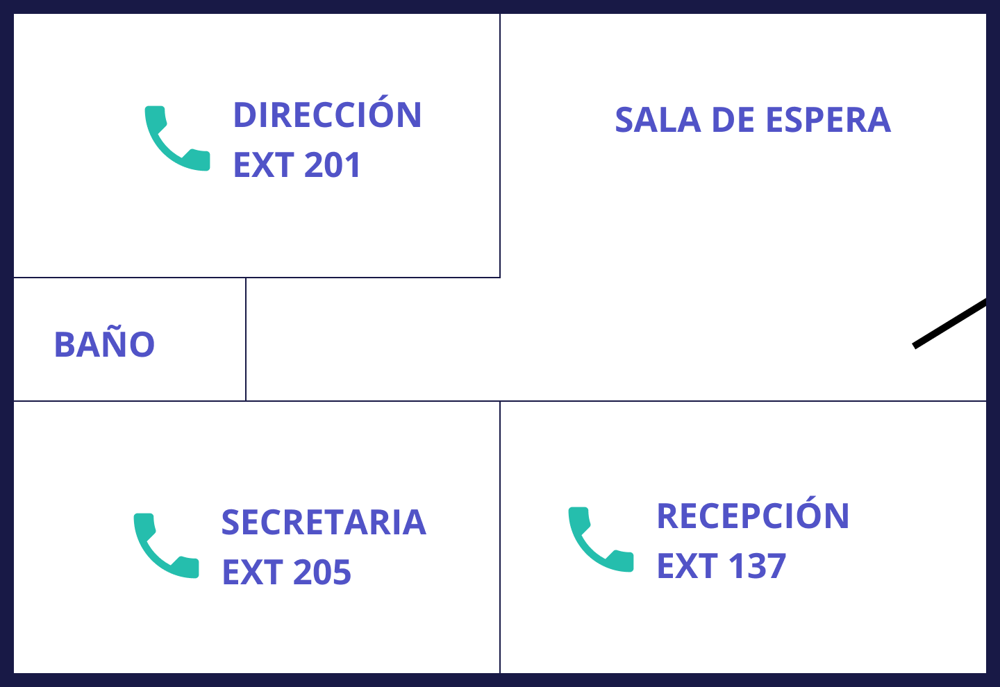
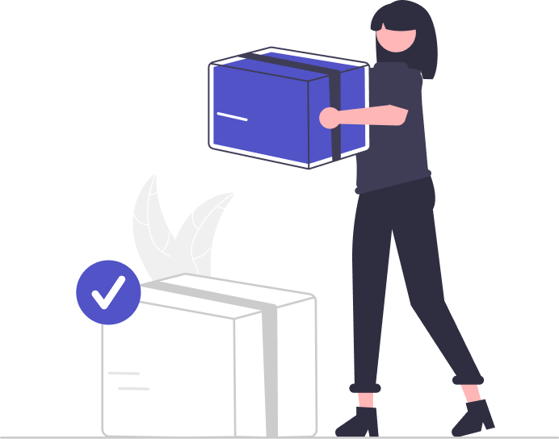
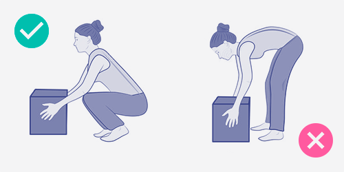

3.0 Introducción
Para recibir, distribuir y entregar la paquetería y documentación, es importante diferenciar entre prensa, paquetes, documentos y porta-firmas.
Para ello tienes que conocer muy bien la distribución de los departamentos y cómo se designan y las personas que trabajan en cada uno de ellos.
Aprenderás a clasificar documentos y paquetes por despachos y personas a las que tendrás que entregarlos.
Es primordial guardar la confidencialidad y seguridad en los documentos y paquetes.
3.1 La ubicación física de las distintas áreas y personas dentro de la organización, y sus referencias de acceso/comunicación telefónica.
Para esta tarea es necesario identificar los diferentes departamentos de la organización y el personal asignado a las mismas, así como sus cargos y responsabilidades.
Tendrás que conocer la ubicación física de las distintas áreas de trabajo y personas, el acceso a las mismas tanto personalmente como telefónicamente. (En el tema anterior ya viste parte de esta información)

También tienes que conocer el lugar dónde debes dejar la prensa, los paquetes o documentos y porta-firmas.
El canal de comunicación más frecuente en un organismo público es el teléfono interno, por lo que tendrás que saber utilizarlo para recibir y hacer llamadas internas.
Es muy posible que te llamen para recoger y entregar paquetes, documentos o porta-firmas, lo realizarán con llamadas internas. Las llamadas internas son llamadas que se hacen dentro de la organización, por ejemplo de despacho a despacho.
Las llamadas internas son llamadas gratuitas, tienes que marcar directamente la extensión deseada perteneciente al despacho o área de trabajo, por ejemplo 012.
Recuerda el uso del teléfono.
La voz
La voz deberá ser agradable, natural, clara. Cuando hablemos, lo haremos con claridad, articulando bien las palabras y a una velocidad normal.
La actitud
Nuestra actitud ha de ser positiva y profesional. Debemos reflejar entusiasmo, confianza en nosotros mismos, deseos de ayudar, formalidad, seriedad y sinceridad.
El lenguaje
Evitaremos usar términos desconocidos o que puedan generar confusión en los profesionales. Hay que explicar con claridad lo que estamos diciendo.
El silencio
Muchas veces, puede ser necesario guardar unos segundos de silencio. Esos segundos, se le hacen interminables al cliente que está al otro lado del teléfono.
Si vamos a tardar más de un minuto, hemos de decírselo, ofreciéndonos a volverle a llamar tan pronto como podamos, procurando que no tenga que estar pendiente de nuestra llamada.
Por ejemplo, si nos llaman para preguntar si le han dejado un documento importante y nosotros tenemos que mirar si lo han entregado.
Cuando el cliente nos habla, deberemos guardar silencio aplicando las técnicas de escucha activa, con el fin de que aprecie que no sólo lo estamos oyendo, sino escuchando.
Para no interrumpir al emisor, se debe hacer uso de expresiones de tipo:
si…, ya…, claro…,
desde luego…, entiendo…
Consejos para el manejo funcional del teléfono de forma interna
Si efectuamos una llamada:
Antes de realizar una llamada tenemos que pensar en los siguientes puntos:
- ¿A quien va dirigida la llamada? Saber a quién vamos a llamar.
- ¿Qué tengo que decir? Determinar las ideas principales que vamos a comunicar.
- ¿Cómo voy a decirlo? Como tengo que decir las cosas para conseguir lo que quiero.
- ¿Qué voy a necesitar para el desarrollo normal de la llamada? Tener a mano la documentación que podamos necesitar.
Durante la llamada hay que seguir una serie de pasos:
- Saludar y presentarnos.
- Crear un clima acogedor. Para ello es importante emplear el nombre y tratamiento de la persona con la que hablamos.
- Explicar para qué hemos llamado.
- Aplicar la técnica de escucha activa.
- Exponer el tema de forma clara y profesional.
- Concretar lo acordado y recordar al cliente que estamos a su servicio.
- Despedirnos adecuadamente.
Si recibimos una llamada:
Hay que tener en cuenta las siguientes fases:
- Contestar la llamada lo antes posible, sin hacer esperar. Por lo general una llamada nunca debe superar los tres tonos.
- Saludar, presentarnos (mi nombre y lugar de trabajo) y ofrecer nuestra ayuda.
- Centrarnos en la llamada y aplicar las técnicas de escucha activa.
- Hablar agradablemente, crear una atmósfera positiva entre nosotros y el cliente.
- No mantener conversaciones paralelas.
- Agradecer su llamada. Recordarle que estamos a su servicio y despedirnos de una forma correcta. Es importante esperar a que la otra persona cuelgue primero, ya que si lo hacemos nosotros, puede pensar que deseamos librarnos de ella lo antes posible.
3.2
Circulación interna de la paquetería y
documentación
A diario tendrás la tarea de recoger la prensa, documentos, paquetes y porta-firmas y entregarlos internamente en la organización.

La prensa son publicaciones impresas que se diferencian en función de su periodicidad. Puede ser diaria (diario o periódico), semanal (semanario o revista) y mensual (el caso de revistas especializadas).
Los documentos son escritos que ilustran sobre algún hecho o en los que constan datos importantes.

Los paquetes son objetos que están atados o envueltos para ser transportados.
El porta-firmas es una carpeta que se lleva en la mano y se utiliza para guardar documentos importantes para que los firme una persona concreta.
La circulación interna de la paquetería y documentación se refiere a los documentos y paquetes cuyos destinatarios son alguna de las personas de la misma organización o departamentos.
La circulación interna sirve como un medio de comunicación, permite la implicación de los trabajadores en la organización y mejora sus relaciones.
3.3
Técnicas básicas de recepción, registro,
clasificación y distribución de paquetería y documentación
En la gestión de paquetería y documentación que se genera de forma interna en la organización tienes que seguir las siguientes fases:
Recepción una vez que llegan los documentos o paquetes recíbelos.
Registro registra el documento o paquete.
Clasificación clasifícalo en función del destinatario.
Distribución entrega el documento o paquete a su destinatario.
Documentos internos y externos asociados a la recepción de la paquetería y documentación.
Hay diferentes tipos de documentos: informes, folletos, notas técnicas, cuestionarios, registros. Estos documentos pueden estar en diferentes soportes, es decir pueden ser textuales, gráficos, sonoros, fotográficos, audiovisuales o informáticos.
Los documentos internos, son los que utiliza la organización en su ámbito interno. Pueden ser convocatorias, actas, autorizaciones, avisos, anuncios, boletines, revistas, memorias, programas, solicitudes…
Estos documentos son importantes ya que la marcha del trabajo depende de ellos. Veamos algunos de ellos:
Convocatoria: es un documento por el que se cita de forma oficial a un grupo de personas para tratar algún tema en un lugar determinado. Es importante que este documento lo hagas llegar a las personas interesadas con rapidez para que ellos puedan planificar su trabajo.
Acta: es un documento por el que se da fe de los hechos o de lo sucedido en las reuniones, así como los acuerdos tomados en las mismas. El secretario da fe de este documento mediante su firma, y la de los restantes miembros convocados a la reunión. En algunos casos podrás encontrarte con esta tarea, es importante que firmen las personas que aparecen en el documento.
Avisos y anuncios: Son informaciones o noticias de carácter general que afectan a la organización y al personal de la misma. Estos avisos o anuncios suelen colocarse en el tablón de anuncios.
Boletines y revistas: son actividades e informaciones referentes a la cultura de la organización y al ocio.
Memorias: son documentos que reflejan los datos y actividades principales llevada a cabo por la organización durante un determinado tiempo, suele ser un año.
Nota interior: es una forma de comunicarse entre sí los diferentes departamentos de una organización.
Los documentos externos, son anuncios, circulares, tarjetas de visita, invitaciones, saluda… que utiliza la organización hacia el exterior
Anuncios: Se emplean cuando la organización publica determinadas noticias que interesan a sus clientes u a otras organizaciones.
Circular: se utiliza para anunciar algún acontecimiento o evento a otras organizaciones o personas.
Invitación: son documentos que surgen como consecuencia de la necesidad de establecer un acercamiento entre el anfitrión de un acto social y los asistentes a ellos. Puede ser por ejemplo, un saluda, este es un documento utilizado por el personal de organización, por los cargos públicos de las entidades, o por organismos e instituciones oficiales para comunicar nombramientos, tomas de posesión, etc.
Registro de paquetería y documentación
La primera tarea será recoger los paquetes de la zona donde los depositen los proveedores. Son paquetes que puede transportar una persona y que puedes almacenar en el espacio físico de tu lugar de trabajo.
Después identificarás a qué departamento y persona va dirigido el paquete y tendrás que ponerte en contacto con el destinatario. Para efectuar la entrega la organización responsable del envío, te pedirá que firmes y selles los albaranes de entrega del paquete.
Criterios de clasificación y organización
Todos los documentos y paquetes que tengas que recoger y entregar tendrás que clasificarlos según los despachos y las personas destinatarias. Deberás clasificarlos según criterios de urgencia e importancia y según la disposición de los despachos para la entrega.
Distribución de paquetería y documentación
La distribución la tendrás que hacer prestando mucha atención en no equivocarte de despacho o persona a la que lo entregas.
Se distribuirá en primer lugar los documentos o paquetes urgentes.
Es necesario pensar antes el recorrido que vas a hacer para distribuir los documentos y paquetes, de esa forma te aseguras ser más rápido y no olvidarte de ningún paquete o documento.
La documentación y paquetería se entregará de la forma establecida, normalmente hay un lugar específico para entregarlo en los diferentes departamentos.

3.4
Normas de seguridad, salud laboral y protección ambiental
Cuando tengas que manipular cargas, sigue las siguientes indicaciones:
- Si no puedes con la carga, pide ayuda o utiliza una carretilla.
Para coger peso del suelo:
- Los pies separados, el derecho más adelante, o el izquierdo si eres zurdo.
- Flexiona las rodillas.
- Espalda recta.
- Dobla las rodillas para coger la carga.
Para transportar peso:
- Hazlo poco a poco.
- Espalda recta.
- Mantén la carga cerca del cuerpo, es más fácil moverla.
- Nunca gires el cuerpo cuando lleves peso.
- Coge el peso con la palma de la mano. Así te cansas menos.

3.5 Las relaciones en el centro de trabajo
Para realizar esta tarea es imprescindible mantener un buen ambiente en el trabajo. Para ello tendrás que seguir las normas de protocolo, conocer si las personas con las que tienes que relacionarte, en la distribución de paquetes y documentación, requieren de algún tratamiento oficial.
Recuerda que tu imagen es importante, mantén siempre el uniforme o ropa bien abrochada y limpia.
Utiliza las normas de cortesía, llamar siempre antes de entrar en un despacho, pedir permiso para entrar, saludar y despedirse adecuadamente, con respeto y educación.
Haz un buen uso de la comunicación verbal y no verbal, eso te garantizará una buena relación en el trabajo con tus superiores y compañeros.
3.6 La normativa legal de seguridad y confidencialidad en la manipulación de paquetería y documentación
En la manipulación de paquetes, documentos, porta-firmas, tienes que garantizar la confidencialidad y seguridad de la información que ahí se recoge. Es por ello que no deberás abrirlos, leerlos o manipularlos.
Los paquetes, documentos y porta-firmas deben ser entregados a la persona a la que van dirigidos. Una equivocación dificultará la confidencialidad y seguridad de los documentos.
La confidencialidad existe para prevenir la divulgación de información a personas o sistemas no autorizados. Por ejemplo la perdida de confidencialidad puede realizarse al abrir un paquete, leer un documento que no es tuyo.
La seguridad son las medidas preventivas de la organización que permite resguardar y proteger la información, buscando mantener la confidencialidad, la disponibilidad e integridad de la misma.
La disponibilidad es la característica de la información de encontrarse a disposición de quienes deben acceder a ella. Por ejemplo, un acta tiene que estar a disposición de los participantes en la reunión, para que puedan leer los acuerdos a los que llegaron.
La integridad sirve para mantener los documentos y paquetes libres de modificaciones no autorizadas. Por ejemplo, si borras parte de un documento cometes una falta contra la integridad.